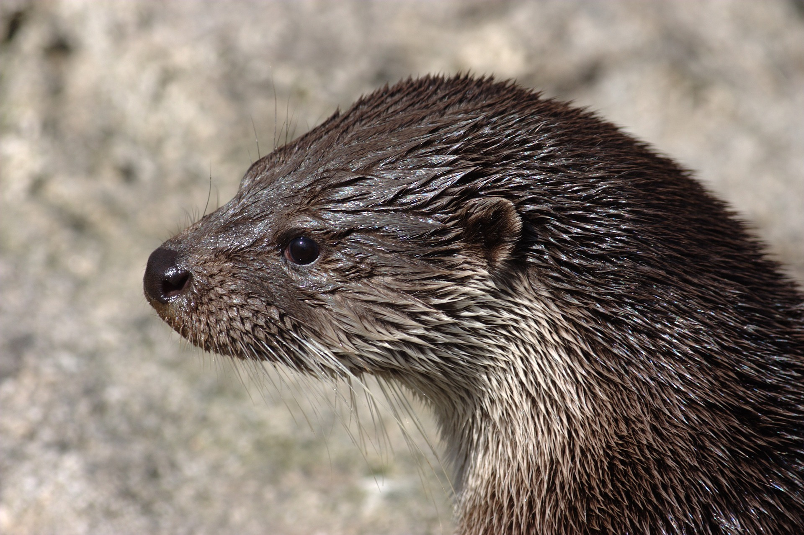

Loutre d'europe
Lutra lutra L.
La seule espèce de loutre présente en France.
Elle est habituellement solitaire, occupant un territoire de 5 à 15 km de rives le long
d'un cours d'eau (parfois davantage) ou de 20 à 30 km2 en zone de marais.
Elle emprunte régulièrement les mêmes passages sur la berge pour se mettre à
l'eau : les « coulées ». Lorsqu’elle sort de l’eau, elle se roule dans l’herbe pour
essuyer sa fourrure, sur des zones reconnaissables à l’herbe couchée et appelées
« places de ressui ». En montagne on peut la trouver jusqu'à une altitude de 1 300 m.
- Taille : 60 à 80cm de long
- Pelage : brun foncé
- Poids : 5 à 15kg
Amis
- Loutre de rivière
- Loutre géante